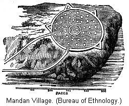

Different views on this subject—Modern system of government— Ancient system of government—Tribal government universal in North America—The Indians not wandering Nomads—Indian houses communal in character—Indian methods of defense—Mandan villages—Indians sometimes erected mounds—Probable government of the Mound Builders—Traditions of the Mound Builders among the Iroquois—Among the Delawares—Probable fate of the Mound Builders—The Natchez Indians possibly a remnant of the Mound Builders—Their early traditions—Lines of resemblance between the Pueblo tribe and the Mound Builders—The origin of the Indians—America inhabited by Indians from a very early time— Classification of the Indian tribes—Antiquity of the Mound Builders' works.
ATTEMPTS to explain the origin of the numerous tribes found in possession of America at the time of its discovery by Europeans have been many and various. There are so many difficulties attending the solution of this problem that even at this day no theory has received that full assent from the scientific world deemed necessary for its establishment as an ascertained fact. New interest has been thrown around this question by the discoveries of late years. In our south-western territories we have clearly established the former wide extension of the village Indians, remnants of which are still to be found in the inhabited pueblos; and, as we have seen, the wide expanse of fertile soil, known as the Mississippi Valley, has undoubtedly been the home of tribes who are generally supposed to have attained a much higher stage of culture than that of the Indians—at least, of such culture as we are accustomed to ascribe, whether justly or not, to Indian tribes. It becomes an interesting question, therefore, to determine what connection, if any, existed between the Mound Builders and the Indian tribes on the one hand, and the Pueblo tribes on the other.
As to the works of the Mound Builders, one class of critical scholars think they see in them the memorials of a vanished race, and point out many details of construction, such as peculiarities in form, in size, and position, which they think conclusively prove that the works in question could only have been produced by races or tribes far more advanced in culture than any Indians. This belief finds expression by a well-known writer in the following words: "A broad chasm is to be spanned before we can link the Mound Builders to the North American Indians. They were essentially different in their form of government, their habits, and their daily pursuits." This is substantially the opinion of a great many writers on this subject.2
But this conclusion has not been allowed to pass unchallenged. We have on record the convictions of a few careful investigators that there is no necessity for supposing that only an extinct or vanished race could have built the mounds and thrown up the embankments which we observe in the valley of the Ohio and elsewhere; that there is nothing, in fact, either in the construction of the mounds themselves or in the remains of art found in them, which we may not with safety ascribe to the ancestors of our present Indians.3 It will be seen that we may, indeed, be at a loss to know what conclusion to adopt; hence, as an aid to us in this direction, it may be well to inquire into the organization of Indian tribes and their customs and manners at the time of their discovery.
It is not necessary to sketch their history, as this has been done many times. Moreover, it is but a dreary recital of the gradual encroachment of the Whites on the lands of the Indians, the vain endeavors of the latter to repress them, and a record of many cruel acts of savage warfare, burning villages, midnight massacre, and scenes of terrible sufferings. The uniform result was that the Indian tribes were steadily driven away from their ancient homes, until we now find them but a sorry remnant on scattered reservations or grouped together in the Indian Territory. Their ancient institutions are nearly broken down, and it is with difficulty that we can gain an understanding of their early condition; and yet this seems to be necessary before we are prepared to decide on the origin of the mound-building people.
It seems necessary here to briefly describe the two great plans or systems of government, under one or the other of which mankind, as far as we know them, have always been organized, though, theoretically, there must have been a time, in the very infancy of the race, when there was either no government or something different from either of them. At the present day, in all civilized countries, government is founded upon territory and upon property. A person is described as living in such a township, county, and state.4 This seems to be a very simple and natural division, but, like every thing else, it is the result of growth—of a development. It took nearly three centuries of civilization and a succession of able men, each improving on what the other had done, to fully develop this system among the Greeks.5 This is the basis of the modern form of government. Whenever it was organized, it marked the termination of ancient government. The other plan of government is founded on personal relations.
A person would be described as of such a gens, phratry, and tribe. It is sufficient to state the words gens, and phratry simply denote subdivisions of a tribe.6 This is the ancient system of government, and goes very far back in the history of the race. It is that state of society which everywhere preceded history and civilization. When we go back to the first beginning of history in Europe, we find the Grecian, Roman, and Germanic tribes in the act of substituting the modern system of government for the tribal state, under which they had passed from savagism into and through the various stages of barbarism, and entered the confines of civilization. The Bible reveals to us the tribal state of the Hebrews and the Canaanites.
Under the light of modern research, we can not doubt but what this form of government was very ancient, and substantially universal. It originated in the morning of time, and so completely answered all the demands of primitive society that it advanced man from savagism, through barbarism, and sufficed to enable him to make a beginning in civilization. It was so firmly established as one of the primitive institutions, that when it was found insufficient to meet the demands of advancing society, it taxed to the utmost the skill of the Aryan tribes to devise a system to take its place.
This was the system of government throughout North America when the Spaniards landed on its shores. This is true, at least as far as our investigations have gone.7 In several cases tribes speaking dialects of the same stock-language had united in a confederacy; as, for instance, the celebrated league of the Iroquois, and in Mexico, the union of the three Aztec tribes. But confederacies did not change the nature of tribal government. As there was but one general form or plan of government in vogue amongst the Aborigines of North America at the time of discovery, we ought certainly to find common features in the culture of the Pueblo Indians of the South-west, the Mound Builders of the Mississippi Valley, and the various Indian tribes; and if the lines of resemblance are sufficient to show a gradual progress from the rude remains of savage tribes to the more finished works of the Pueblos, and between these and the Mound Builders, then we may consider this fact as one more reason for believing that they constitute but one people in different stages of development.
The tribal state of society is always associated with village life. It makes no difference where we commence our investigations, we will soon be convinced that village life is the form in which people organized in tribes lived. This is true of the wild tribes in Africa, and of the hill tribes of India to-day.8 The same was true of the early Greeks.9 There must be a reason for this. It is found in their peculiar system of government. People divided into groups and clusters would naturally be drawn together into villages. We would expect, then, to find that the Indian tribes lived in villages. We are accustomed to speak of them as wandering nomads. This is scarcely correct; or rather, it is certainly wrong, if applied to the tribes east of the Mississippi, when first encountered by the whites. Some of them may have been in a state of migration, in search of better homes, or homes more secure from the attacks of too powerful enemies, as was the case with the Shawnees, and wandering bands on hunting or warlike expeditions were common enough. The Germanic, tribes that overthrew the Roman Empire, for a similar reason, were in a migrating state. But it is none the less certain that they established permanent villages wherever they found suitable places.
Nearly all the tribes claimed separate districts, in which they had permanent villages, often stockaded.10 The site of Montreal was a famous Indian village,11 and other villages were found in Canada. The Iroquois tribes had permanent villages, and resided in them the greater part of the year.12 One visited in 1677 is described as having one hundred and twenty houses, the ordinary one being from fifty to sixty feet long, and furnishing shelter to about twelve families. In one case, at least, the town was surrounded by palisades.
In 1539 De Soto made his appearance on the coast of Florida. Four years later a feeble remnant of this expedition landed at Panuco, Mexico. His route has not been accurately traced, but it is certain he travelled the Gulf States and crossed the Mississippi. De Soto himself found a grave in the waters of this river, but under new leaders the expedition pushed on through Arkansas, and probably found its most western point on the prairies of the West, where, disheartened, it turned back to near where De Soto died, constructed some rude boats, and floated down the Mississippi, and so to Mexico. We have two accounts written by members of this expedition,13 and a third, written by Garcilasso de La Vega from the statements of eye-witnesses and memoranda which had fallen into his hands.
From these considerable can be learned of the Southern Indians before they had been subjected to European influences. One of the first things that arrests attention is the description of the villages. They found, to be sure, some desert tracts, but every few miles, as a rule, they found villages containing from fifty to three hundred spacious and commodious dwellings, well protected from enemies—sometimes surrounded by a wall, sometimes also by a ditch filled with water. When west of the Mississippi they found a tribe living in movable tents, they deemed that fact worthy of special mention. But in the same section they also found many villages.
One hundred and forty years afterward the French explorer, La Salle, made several voyages up and down the Mississippi. He describes much the same state of things as do the earlier writers. The tribes still dwelt in comfortable cabins, sometimes constructed of bark, sometimes of mud,14 often of large size, in one case forty feet square, and having a dome-shaped roof. Nor was this village life confined to the more advanced tribes. The Dakota tribes, which include the Sioux and others, have been forced on the plains by the advancing white population, but when first discovered they were living in villages around the headwaters of the Mississippi. Their houses were framed of poles and covered with bark.15
Lewis and Clark, in 1805, found the valley of the Columbia River inhabited by tribes destitute of pottery, and living mainly on fish, which were found in immense quantities in the river. They describe them as living in large houses, one sometimes forming a village by itself. They describe one house capable of furnishing habitations for five hundred people. Other authorities could be quoted, showing that the Algonquin Indians, living in Eastern and Atlantic States, had permanent villages.16 The idea then, that the Indians are nothing but wandering savages, is seen to be wrong. It is well to bear this in mind, because it is often asserted that the Mound Builders must have been a people possessing fixed habitations. While this is doubtless correct, we see that it is also true of the Indians.17
There is another feature of Indian life which we will mention here, because it shows us a common element in the building of houses, seen alike in the pueblo structures of the West and the long houses of the Iroquois. That is, the Indian houses were always built to be inhabited by a number of families in common. All nations in a tribal state possess property in common. It is not allowed to pass out of the gens of the person who possesses it, but at his death is supposed to be divided among the members of his gens; in most cases, however, to those nearest of kin within the gens.18 This communism showed itself in the method of erecting houses.
The long house of the Iroquois was divided into apartments so as to shelter from one hundred to two hundred Indians. A number of these houses gathered together composed a village. These were quite creditable structures of Indian art, being warm and comfortable, as well as roomy. Should we examine the whole list of writers who have mentioned Indian villages, we would find them all admitting that the houses were usually occupied by a number of families, one in the Columbia Valley, as we see, sheltering five hundred persons.
There is no question but the pueblos were built by people holding property in common. They were, of course, erected by a more advanced people, who employed better materials in construction, but it is quite plain that they were actuated by the same instincts, and built their houses with the same design in view as the less advanced Indian tribes in other sections of the country. What we have described as the small houses in Arizona in the preceding chapter, in most cases includes several rooms, and we are told that in one section they "appear to have been the abode of several families."19
One of the main points the Indians would have to attend to in the construction of their villages was how to defend them, and we can not do better than to examine this point. A French writer represents the villages of Canada as defended by double, and frequently triple, rows of palisades, interwoven with branches of trees.20 Cartier, in 1535, found the village of Hochelaga (now Montreal) thus defended. In 1637 the Pequot Indians were the terror of the New England colonies, and Capt. Mason, who was sent to subject them, found their principal villages, covering six acres, strongly defended by palisades.
The Iroquois tribes also adopted this method of defense. In 1615 Champlain, with Indian allies, invaded the territory of the Iroquois. He left a sketch of his attack on one of their villages. This sketch we reproduce in this illustration, which is a very important one, because it shows us a regularly palisaded village among a tribe of Indians where the common impression in reference to them is that they were a wandering people with no fixed habitations. The sketch is worthy of careful study. The buildings within are the long houses which we have just described. They are located near together, three or four in a group. The arrangement of the groups is in the form of a square, inclosing a court in the center. This tendency to inclose a court is a very common feature of Indian architecture. Such, as we have seen, is the arrangement of the pueblos. Such was also the arrangement of the communal buildings in Mexico, Central America, and Peru. In this case the village covered about six acres also. The defense was by means of palisades. There seem to be two rows of them. They seem to have been well made, since Champlain was unsuccessful in his attack. In earlier times these fortified villages were numerous.
Further south, this method of inclosing a village was also in use. In 1585 the English sent an expedition to the coast of North Carolina. An artist attached to this expedition left some cuts, one of which represents a village near Roanoke. It is surrounded, as we see, by a row of palisades, and contains seventeen joint tenement houses, besides the council house. The historians of De Soto's expedition make frequent mention of walled and fortified towns. "The village of Mavilla," from which comes our name Mobile, says Biedman, "stood on a plain surrounded by strong walls." Herrera, in his General History, states that the walls were formed by piles, interwoven with other timber, and the spaces packed with straw and earth so that it looked like a wall smoothed with a trowel.
Speaking of the region west of the Mississippi, Biedman says: "We journeyed two days, and reached a village in the midst of a plain, surrounded by walls and a ditch filled by water, which had been made by Indians." This town is supposed to have been situated in the north-eastern part of Arkansas, and it is interesting to note that recent investigators find what are probably the remains of these walled towns, in the shape of inclosures with ditches and mounds, in North-eastern Arkansas and South-eastern Missouri.21 The tribes throughout the entire extent of the Mississippi Valley were accustomed to palisade their villages—at least, occasionally.22
 On the Missouri River we find some Indian tribes that have excited a great deal of interest among archæologists. It has been surmised that, if their history could be recovered, it would clear up a great many difficult questions. They were accustomed to fortify their village's with ditches, embankments, and palisades. This gives us a cut of one of their villages. It is to be observed that it has a great likeness to some of the inclosures ascribed to the Mound Builders.
This has been noted by many writers. Says Brackenridge: "In my voyage up the Missouri I observed the ruins of several villages which had been abandoned twenty or thirty years, which in every respect resembled the vestiges on the Ohio and Mississippi."23 Lewis and Clark, in their travels, describe the sites of several of these abandoned villages, the only remains of which were the walls which had formerly inclosed the villages, then three or four feet high. The opinion has been advanced that the inclosures of the Mound Builders were formerly surmounted by palisades. Mr. Atwater asserts that the round fort which was joined to a square inclosure at Circleville showed distinctly evidence of having supported a line of pickets or palisades.24
Should it be accepted that the inclosures of the Mound Builders represent village sites, and that they were probably further protected by palisades, it would seem, after what we have just observed of the customs of the Indians in fortifying their villages, to be a simple and natural explanation of these remains.
We have already referred to the fact that scholars draw a distinction between the more massive works found in the Ohio Valley and the low, crumbling ruins occupying defensive positions found in such abundance along Lake Erie and in Western New York, asserting the former to be the works of the Mound Builders proper, and the latter the remains of fortified Indian villages. This may be true, but it seems to us that there is such a common design running through all these remains that it is more reasonable to infer that the more massive works were constructed by people more advanced than those who built the less pretentious works, but not necessarily of a dilterent race. We can not do better than to quote the remarks of Mr. Brackenridge in this connection: "We are often tempted by a fondness for the marvelous to seek out remote and impossible causes for that which may be explained by the most obvious."25
But inclosures and defensive works are only a small part of the Mound Builders' remains. We know that large numbers of mounds are scattered over the country, and we recall in this connection what was said as to the erection of mounds by Indian tribes in a preceding essay. Somewhat at the risk of repetition we will once more examine this question. It is generally admitted that it was the custom of Indian tribes to erect piles of stones to commemorate several events, such as a treaty, or the settlement of a village, but more generally to mark the grave of a chief, or some noted person, or of a person whose death occurred under unusual circumstances.26 These cairns are not confined to any particular section of the country, being found in New England, throughout the South, and generally in the Mississippi Valley. From their wide dispersion, and from the fact that they do not differ from the structures built by Indian tribes within a few years past, it is not doubted but what they are the works of Indians.
Now, if we could draw a dividing line, and say that, while the Indians erected mounds of stone, the Mound Builders built theirs of earth, it would be a strong argument in favor of a difference of race. But this can not be done. When De Soto landed in Florida, nearly three hundred and fifty years ago, he had an opportunity of observing the customs of the Indians as they were before the introduction of fire-arms, and before contact with the Whites had wrought the great change in them it was destined to. Therefore, what few notes his historians have given us of the ways of life they observed amongst the southern tribes are of great importance in this connection. At the very spot where he landed (supposed to be Tampa Bay) they observed that the house of the chief "stood near the shore, upon a very high mound, made by hand for strength."
Garcilasso tells us "the town and the house of the Cacique (chief) Ossachile are like those of the other caciques in Florida. . . . The Indians try to place their villages on elevated sites, but, inasmuch as in Florida there are not many sites of this kind where they can conveniently build, they erect elevations themselves, in the following manner: They select the spot, and carry there a quantity of earth, which they form into a kind of platform, two or three pikes in height, the summit of which is large enough to give room for twelve, fifteen, or twenty houses, to lodge the cacique and his attendants. At the foot of this elevation they mark out a square place, according to the size of the village, around which the leading men have their houses. To ascend the elevation they have a straight passage-way from bottom to top, fifteen or twenty feet wide. Here steps are made by massive beams, and others are planted firmly in the ground to serve as walls. On all other sides of the platform the sides are cut steep."27
Biedman, the remaining historian, says of the country in what is now (probably) Arkansas. "The caciques of this country make a custom of raising, near their dwellings, very high hills, on which they sometimes build their huts."28 Twenty-five years later the French sent an expedition to the east coast of Florida. The accounts of this expedition are very meager, but they confirm what the other writers have stated as to the erection of platform mounds with graded ways.29 Le Moyne, the artist of this expedition, has left us a cut of a mound erected over a deceased chief. It was, however, but a small one.30
La Harpe, writing in 1720, says of tribes on the lower Mississippi: "Their cabins . . . are dispersed over the country upon mounds of earth made with their own hands." As to the construction of these houses, we learn that their cabins were "round and vaulted," being lathed with cane and plastered with mud from bottom to top, within and without. In other cases they were square, with the roof dome-shaped, the walls plastered with mud to the height of twelve feet.31 It is interesting to observe how closely what little we do know about Mound Builders' houses coincides with the above.
Recent investigations by the Bureau of Ethnology have brought to light vestiges of great numbers of their buildings. These were mostly circular, but those of a square or rectangular form were also observed. In Arkansas their location was generally on low, flat mounds, but vestiges of some were also noticed near the surface of large mounds. In Southern Illinois, South-eastern Missouri, and Middle and Western Tennessee the sites of thousands were observed, not in or on mounds, but marked by little circular, saucer-shaped depressions, from twenty to fifty feet in diameter, surrounded by a slight earthen ring. We know the framework of these houses was poles, for in several cases the charred remains of these poles were found. We know they were plastered with a thick coating of mud, for regular layers of lumps of this burnt plastering are found. These lumps have often been mistaken for bricks, as in the Selzertown mound. In several cases the plastering had been stamped with an implement, probably made of split cane of large size.32
On the lower Mississippi we meet with the Natchez, a tribe that has excited a great deal of interest; but at present we only want to note that they also constructed mounds. They were nearly exterminated by the French in 1729. But before this Du Pratz had lived among them, and left a description of their customs. Their temple was about thirty feet square, and was situated on a mound about eight feet high, which sloped insensibly from its main front on the north, but was somewhat steeper on the other sides. He also states that the cabin of the chief, or great sun, as he was called, was placed upon a mound of about the same height, though somewhat larger, being sixty feet over the surface.33 A missionary who labored among them, stated that when the chief died his mound was deserted, and a new one built for the next chief.34
Neither was this custom of erecting mounds confined to the Southern Indians. Colden states of the Iroquois: "They make a round hole in which the body is placed, then they raise the earth in a round hill over it."35 It was the custom among a large number of tribes to gather together the remains of all who had died during several years and bury them all together, erecting a mound over them.36 Mr. Jefferson, in his notes on Virginia, describes one of these mounds, and relates this interesting fact in reference to it: "A party of Indians passing about thirty years ago through the part of the country where this barrow is, went through the woods directly to it, without any instructions or inquiry; and having staid about it some time, with expressions which were construed to be those of sorrow, they returned to the high road, which they had left about a half dozen miles to pay this visit, and pursued their journey."37
Coming down to our own times, the Indians had lost a great many of their ancient customs, yet, at times, this old instinct of mound burial asserts itself. About the first of the century Blackbird, a celebrated chief of the Omahas, returning to his native home after a visit to Washington, died of the small-pox. It was his dying request that his body be placed on horseback, and the horse buried alive with him. Accordingly, in the presence of all his nation, his body was placed on the back of his favorite white horse, fully equipped as if for a long journey, with all that was necessary for an Indian's happiness, including the scalps of his enemies. Turfs were brought and placed around the feet and legs, and up the sides of the unsuspecting animal, and so gradually the horse and its rider were buried from sight, thus forming a good-sized burial mound.38 Another instance came under Mr. Catlin's observation at the pipe stone quarry in Dakota. He visited there about 1832 and saw a conical mound, ten feet high, that had been erected over the body of a young man accidentally killed there two years before.
Enough references have now been given to show that the Indian tribes certainly did erect mounds, and that there is every reason to suppose they were the authors of the temple mounds of the South, or of some of them, at any rate. We have now shown that, according to early writers, the Indians did live in permanent villages, often stockaded, and knew very well how to raise embankments and mounds. It would seem as if this removed all necessity for supposing the existence of an extinct race to explain the numerous remains, collectively known as Mound Builders' works. Yet, as this is surely an important point, it may be well to carry the investigations a little further.
Taking in account the great amount of labor necessary to raise such structures as the mounds at Cahokia and Grave Creek, and the complicated works at Newark, some writers have asserted that the government of the Mound Builders was one in which the central authority must have had absolute power over the persons of the subjects, that they were in effect slaves;39 and as this was altogether contrary to what is known amongst Indian tribes, they must have been of a different race.
If the Indians in a tribal state are known to have erected some mounds, and to have built temple-platforms and walled towns in the south, then all they needed was sufficient motive, religious or otherwise, to have built the most stupendous works known. We think the ruined pueblos in the Chaco Cañon represent as great an amount of work as many of those of the Mound Builders. A calculation has been made, showing that over thirty million pieces of stone were required in the construction of one pueblo,40 besides an abundance of timber. Each piece of stone had to be dressed roughly to fit its place; the timbers had to be brought from a considerable distance, cut and fitted to their places in the wall, and then covered with other courses, besides other details of construction, such as roof-making, plastering, and so forth, and this is not the calculation of the largest pueblo either.41 Yet no one supposes that the Indian tribes who erected these structures were under a despotic form of government.
We think, however, that it might be freely admitted that in all probability the government of the Mound Builders was arbitrary, but so was the government of a great many Indian tribes. Amongst the Natchez the chief was considered as descended from the sun. Nor was this belief confined to the Natchez, as the tribes of the Floridian Peninsula asserted the same thing of their chiefs. Among all these latter tribes the chief held absolute and unquestioned power over the persons, property, and time of their subjects.42
Amongst the Natchez the power of the Great Sun (their title for chief) seems to have been very great. This nation had a regularly organized system of priesthood, of which the chief was also the head. On the death of the chief a number of his subjects were put to death to keep him company. But we must notice that the subjects considered it an honor to die with the chief, and made application beforehand for the privilege. Bearing these facts in mind, it does not seem improbable that in more distant days, when the Natchez or some kindred tribe were in the height of their power, the death of some great chief might well be memorialized by the erection of a mound as grand in proportion as that of Grave Creek.
In fact, the more we study the subject, the more firmly we become convinced that there is no hard and fast line separating the works of the Mound Builders from those of the later Indians. We therefore think that we may safely assert that the best authorities in the United States now consider that the mound building tribes were Indians, in much the same state of culture as the Indian tribes in the Gulf States at the time of the discovery of America, and we shall not probably be far out of the way if we assert, that when driven from the valley of the Ohio by more warlike people they became absorbed by the southern tribes, and, indeed the opinion is quite freely advanced that the Natchez themselves were a remnant of the "Mysterious Mound Builders."
If the Mound Building tribes were here at a comparatively late date, we ought to expect to find some traditions of their former existence. The statement is quite often made that the Indians had no tradition as to the origin or purpose of the mounds, and from this it is argued that the mounds are of great antiquity. But, instead of finding no traditions, we find nearly every tribe possessed of some, and often very full and distinct.43 It makes no difference that a number of those traditions are childish, and that traditions are a very unsatisfactory sort of proof at best. Still, if we observe that the traditions, such as they are, are corroborative of other proofs, it is well to examine into them anyway.
The Iroquois tribes have a tradition, that is given in the writing of Cusick, a Tuscaroa Indian. It is generally considered as a nonsensical production, but Mr. Hale points out that, "whenever his statements can be submitted to the tests of language, they are invariably confirmed."44 Such, for instance, are the assertions that they formerly inhabited the country around the St. Lawrence River in Canada, and further, that the Mohawk was the oldest tribe, from whence the others separated in time.
The substance of the tradition supposed to refer to the Mound Builders, is as follows: South of the great lakes was the seat of a great empire. The emperor resided in a golden city. The nations to the north of the great lakes formed a confederacy, and seated a great council fire on the river St. Lawrence. This confederacy appointed a high chief as ambassador, who immediately departed to the south to visit the emperor at the golden city. Afterwards, the emperor built many forts throughout his dominions, and almost penetrated to Lake Erie. The people to the north considered this an infringement on their territory, and it resulted in a long war.
The people of the north were too skillful in the use of bows and arrows, and could endure hardships which proved fatal to a foreign people. At last, the northern people gained the victory, and all the towns and forts were totally destroyed and left in ruins.45 If this tradition stood alone, it would not be deserving of much attention, but we know the Iroquois tribes did originally live in the valley of the St. Lawrence. We also feel sure the Mound Builders were a powerful people, and lived in the Ohio Valley. What is there unreasonable, therefore, in supposing that the Iroquois came in contact with them, and that this tradition rests on facts?
But this tradition is very similar to one among the Delawares. This tribe spoke a different stock language than the Iroquois, and belonged to the Algonquin division of the Indian tribes. There were many wars between the Delawares and the Iroquois, but finally the latter were acknowledged masters. It is well to keep this in mind, because with this feeling between the two tribes, they would not be apt to have similar traditions unless there was a basis of fact.46
Mr. Gallatin informs us that the original home of the Algonquins was to the north of Lake Superior. The tradition states that the Delawares (they called themselves the Leni-lenape) were living in a cold, fir-tree country—evidently the wooded regions north of Lake Superior. Getting tired of this country, they set out towards the East in search of a better place, and probably followed the lake shore around until they finally came to a great river—that is, the Detroit. The country beyond was inhabited by a numerous and powerful people, called the Allegewi,47 who dwelt in great fortified towns. Here they found the Huron-Iroquois tribes. This was before the Iroquois had separated from the Hurons.
Some treachery on the part of the Allegewi was made the occasion of war. The Leni-lenape and the Hurons united their forces. This is perhaps the Confederacy of Cusic. A long war resulted, but in the end the Allegewi were defeated, and, as the tradition states, "all went southward."48 We see no reason to doubt but what we have here a traditional account of the overthrow of the Mound Builders. The remnant that fled south found the country inhabited by mound-building tribes, and doubtless became absorbed among them. In confirmation of this view it may be said that the languages of the tribes of the Gulf States, which belong to one stock language,49 have all been greatly influenced by words derived from a foreign source.50
Perhaps a large body of them may have lived on as a fully organized tribe. As we have already stated, the opinion is quite freely advanced that this is the origin of the Natchez.51 It seems advisable to inquire more particularly into the customs and traditions of this tribe. Du Pratz, who lived among them in 1718, and claims to have enjoyed the confidence of their chiefs and principal men, has left the most complete account of them; though Father Charlevoix, a Jesuit priest, in his letters, also describes them fully.
A number of interesting statements in regard to them, at once arrest attention. Most of the tribes in the southern region of the United States spoke dialects of a common stock language (Chata-muskoki), showing a derivation from a common source. The Natchez spoke a different language. Sun-worship seems to have been carried to a greater extent than among any other tribes we are acquainted with. As late as 1730 they still had their temples, where the eternal fire was kept burning, carefully watched; for they believed that should it become extinguished, it would surely bring great trouble on the tribe. Among the Natchez, if anywhere among Indian tribes, the power of the chief was absolute, and there seems to have been something like privileged classes amongst them. We have already referred to them as Mound Builders.
But most interesting is it to learn of their former wide extension and ancient power. Du Pratz says, "According to their traditions they were the most powerful nation of all North America, and were looked upon by other nations as their superiors, and on that account were respected by them. To give an idea of their power, I shall only mention that formerly they extended from the River Manchas, or Iberville, which is about fifty leagues from the sea, to the River Wabash, which is distant from the sea about four hundred and sixty leagues; and that they had about eight hundred suns, or princes."52 It is at least a reasonable supposition that that the Natchez were a remnant of the Mound Builders.
So far we have dwelt chiefly on the relations between the Indians and the Mound Builders. Let us now see if we can not detect some connection between the Pueblo tribes of the south-west and the Mound Builders. All the tribes in the Gulf States had traditions of a western and south-western origin. In regard to the Creek Indians, this tradition is very distinct. They relate, with many details, their journey from the west, their fight with the Alabamas, etc.53 In the Natchez tradition, as given by Du Pratz, they are seen, not only to come from the same western source, but distinctly preserve recollections of pueblo houses.
The substance of their traditions is that they came from a pleasant country and mild climate, "under the sun," and in the south-west, where the nation had lived for many ages, and had spread over an extensive country of mountains, hills, and plains, in which the houses were built of stone, and were several stories high. They further relate how, owing to increase of enemies, the great sun sent some one over to examine and report on the country to be found to the east. The country being found extremely pleasant, a large part of their nation removed thither; and, after many generations, the great sun himself came also. Speaking of the ancient inhabitants of the country they came from, the tradition states that "they had a great number of large and small villages, which were all built of stone, and in which were houses large enough to lodge a whole tribe."54 We would offer the same suggestion on these traditions as on the others. They are of value only so far as supported by other testimony. The great objection to them is that the pueblo structures of the west are evidently of recent origin. So these traditions would prove that the Natchez Indians were quite recently connected with the Pueblo tribes, which is not at all probable. We have some slight evidence that does not rest on traditions. Mr. Holmes has given us a plan of an ancient village he discovered on the La Platte River, San Juan Valley. It will be seen by reference to the plate that the buildings were separated from each other. The forms are chiefly rectangles and circles, and one or two seem to have been elliptical. This description certainly reminds us of the circles and squares so common among the Mound Builders. But there is also a truncated mound, fifty by eighty feet, and nine feet high. "Its flat top and height give it more the appearance of one of the sacrificial mounds of the Ohio Valley than any others observed in this part of the West." Mounds are known to exist in Utah.55
We need not expect to trace a continuous line of ruins from the San Juan Valley to that of the Ohio, granting the migration to have taken place, because a migrating race would not be apt to erect monuments until they reached the end of their line of migration. Those who take this view of it say that it is not at all strange that when these migrating tribes reached their new homes in the Mississippi Valley they erected structures differing from those they had formerly built, because all their surroundings would be different, and in the prairie sections they would find neither stone for building their pueblos nor clay suitable for adobe construction. So they would do the next best thing, and build a fortified village. This is the view of that eminent scholar, Mr. Morgan. It must be borne in mind, however, that the fortified villages of the southern Indians, including those of the Mississippi Valley, corresponded more nearly with those of the Atlantic shore, and more northern tribes, than with the pueblo structures.
There is another line of proof which we think has been read the wrong way, or, at least, applied too strongly, and made to do service in proving that the Mound Builders migrated from the valley of the Ohio to Mexico, and there laid the foundation of that wonderful civilization which is yet a riddle to the antiquarian.56 This is derived from a study of the skulls procured from various sections of this country, Peru, and Mexico. It is sufficient to state that anatomists have made a careful study of the skulls of individuals of various nations, and instituted certain comparisons between them, and discoveries of great importance have been made by this means. Now, some of our best American scholars have insisted that the skulls of the Mound Builders and the ancient inhabitants of Mexico and the Inca Peruvians are so similar that they must have belonged to the same race.
This type of skull, however, is characteristic, not only of the Mound Builders, the ancient Mexicans and the Peruvians, but of the Pueblos, and of such tribes as the Natchez, Creeks, and Seminoles. We think, with all due regard to the opinions of others, that in the present state of our knowledge of craniology we are not authorized in drawing very important conclusions therefrom. About all we are justified in stating is that the sedentary or village Indians, whether found in North or South America, have certain common features.
It is also hard to see any great resemblance between the works of the Mound Builders and the Pueblo tribes. The truncated mounds discovered by Mr. Holmes, we remember, were also used as foundations for house structures along the Gila. In this feature we, of course, see a resemblance to the platform mounds of the Mississippi Valley. But we must be careful in tracing connections on such a slim basis as this. We must remember also what a difference there is in the pottery of the two sections.57 If we were to give an opinion, based on the present known facts, we should say the separation between the people who afterwards developed as the pueblo builders of the west and the Mound Builders of the Mississippi Valley took place at an early date.
But let us not suppose that this conclusion clears up all mysteries. A problem which has thus far defied the efforts of some of our best thinkers is still before us, and that is: "From whence came the Indians?" As we remarked at the beginning of this chapter, no one theory has yet received universal acceptance. In view of these facts, it is not best to present any theories, but content ourselves with such statements as seem reasonably well settled. On all hands it is agreed that the Indians have been in America a long while, and whatever advance they were able to make in the scale of civilization has been achieved in this country.58
This statement implies that they were in undisturbed possession of this country long enough for some tribes of them to reach the middle status of barbarism, which means advancement sufficient to enable them to cultivate the ground by irrigation, and to acquire a knowledge of the use of stone and adobe brick in building.59 More than half the battle of civilization had then been won. Look at it as we will, this demands an immense period of time for its accomplishment. In the arts of subsistence, government, language, and development of religious ideas the advancement they had been able to make from a condition of savagism to that in which the Mound Builders evidently lived, or the Aztecs in Mexico, represents a progression far greater than from thence to civilization.
We are, therefore, sure that the Indians have inhabited this country for an extended period. We can prolong the mental vision backwards until we discover them, a savage race, gaining a precarious livelihood by fishing and the chase. In America there was but one cereal, or grain, growing wild. That was maize, or Indian corn. We can not tell in what portion of the continent it was native, but, in whatever section it was, there, probably, first commenced permanent village life.
A settled residence, and being no longer dependent on hunting for a livelihood, would advance the Indians greatly in the scale of culture. So we can understand how in one section would arise Indian tribes possessed of quite complicated systems of government and religion and a knowledge of agriculture. And from this as a center they would naturally spread out to other sections. The conclusion to which we seem driven is, that there is no necessity for supposing the Mound Builders to be any thing more than village Indians, in much the same state of development as the southern Indians at the time of the discovery. The Indian race shows us tribes in various stages of development, from the highly developed Pueblo Indians on the one hand to the miserable Aborigines of California on the other.
These various tribes may be classified as the wild hunting tribes and the sedentary, partially civilized tribes. To this last division belong the Mound Builders. We have seen how the partially civilized tribes in the valley of the San Juan were gradually driven south by the pressure of wild tribes. We need not doubt but such was the case in the Mississippi Valley. But we need not picture to ourselves any imposing movement of tribes. In one location a mound-building tribe may have been forced to abandon its territory, which would be occupied by bands of hunting tribes. In other cases they would cling more tenaciously to their territory. The bulk of them may have been forced south; some in other directions, and, like the Pimas on the River Gila, or the Junanos east of the Rio Grande, have retrograded in culture.60 Some bands may even have reached Mexico, and exerted an influence on the culture of the tribes found there.61
It is only necessary to add a brief word as to the antiquity of the Mound Builders' works, or rather as to the time of abandonment. On this point there is a great diversity of opinion, and it seems to us almost impossible to come to any definite conclusion. The time of abandonment may vary greatly in different sections of the country, and we have seen how apt Indian tribes, even in the same section, are to abandon one village site in order to form another a few miles away.62 Fort Hill, in Ohio, that so strongly impressed its first explorers with a sense of antiquity,63 may have been abandoned long before the Circleville works, where Mr. Atwater could still distinguish vestiges of the palisades that once helped to defend it.
We have said about all that can be said in a brief review of the prehistoric life in America north of Mexico. We have seen how much there is still for our scholars to work up before we can profess to as full and complete a knowledge as we have of the prehistoric life in Europe. We are just on the threshold of discoveries in regard to the Paleolithic Age in this country. The southern boundary of the great ice sheet is now known to us. Many scholars have pointed out to us the scattering bits of evidence going to show that the ancestors of the present Eskimos once inhabited the interior of this continent. Dr. Abbott has found unmistakable evidence of the presence of such a people in New Jersey. Our Indian tribes who came next, are not properly prehistoric, though many questions relating to them belong to that field.
We have examined the works of the people known as Mound Builders. They are indeed varied and full of interest, but our conclusion leaves their origin involved in the still deeper question of the origin of the Indian race. We are satisfied that they were village Indians and not tribes of a vanished people. We have also examined that section of country wherein the greatest development of village Indian life north of Mexico took place. It would be very satisfactory could we show lines of migration from the valley of the San Juan, as a center, to the Mississippi Valley on the one hand, and to Mexico and the South on the other. We can find some lines of evidence, but not enough to positively state such an important truth.
We must now leave this field of inquiry. We trust such of our readers as have followed us in these pages will have clearer ideas of the prehistoric life in North America. They must however regard this knowledge as simply a foundation, a starting-point, or as the shallows along the shore, while the massive building, the long journey, or the great ocean, is still before them. Our scholars are giving their time and attention to these problems. They are learning what they can of the traditions and myths of the tribes still existing. They are studying their languages and plan of government. They are also making great collections of the works of their hands. We will hope some day for clear light on all these topics, which will either confirm our present conclusions or show us wherein we must change them, or, perhaps, reject them altogether.
| TRIBE. | First Phratry, or Brotherhood. |
Bear Wolf Beaver Turtle |
Gens. |
| Second Phratry, or Brotherhood. |
Deer Snipe Heron Hawk |
Gens. |
Chapter XI: The Pueblo Country.
Chapter XIII: The Nahua Tribes.